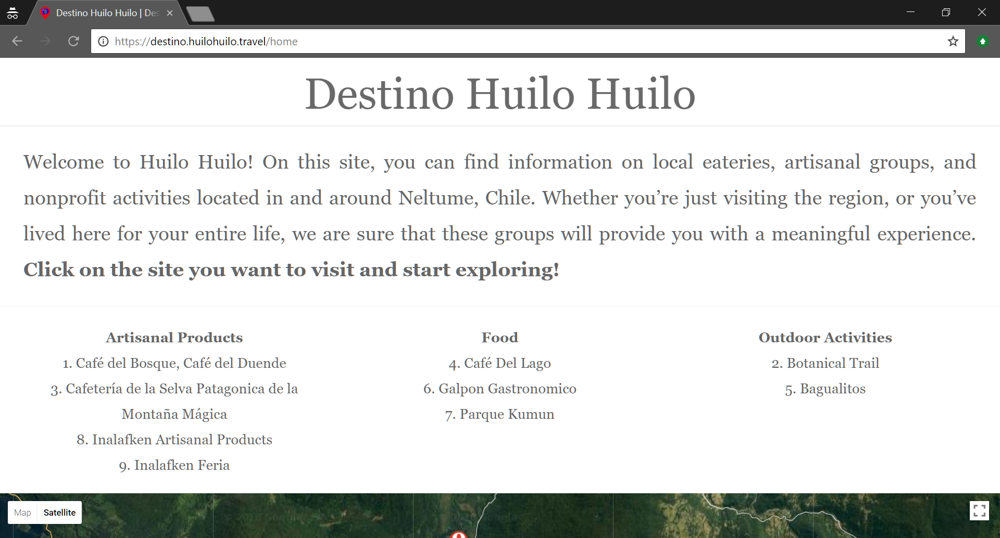

Destinations
Motive
When I arrived in the small post-logging town of Neltume, Chile, I was amazed by all the town had to offer. My task was to somehow create a portfolio of all of the work of the local artists and entreprenuers.
How
I met with the Webpage Manager with the Huilo Huilo Foundation in Neltume to discuss how the website was to be implemented. I was tasked with developing the website using Drupal CMS, a service similar to WordPress in functionality.
Getting Started
I began by identifying what sort of important information each site would have, in order to develop an information architecture that would allow for me to create the individual sites rapidly. This schema, in the form of content types on Drupal, had to be carefully laid out to reduce duplicates in the database. I started my work slowly, wireframing a diagram of a sample webpage.
Overcoming Problems
Most of the problems I was faced with were gathering accurate information and displaying the information in an engaging way for the audience. This was my initial foray into Drupal and the Bootstrap Framework, so I spent many long nights deciding how to best implement certain design features.
Final Product
I am satisfied with the design of the final product. With the help of content editors and translators, I led my team to the creation of 10+ content-ful websites, based on the initial template that was brainstormed at the beginning of the process.
Visit the finished website here.
Takeaways
- I definitely experienced the Pareto principle, or the 80/20 cause-effect rule, firsthand. I had the task of developing many English and Spanish webpages, so I needed to work dilligently and quickly. Perfectionism in this project was definitely going to be a hinderance.
- Understanding the audience for the webpages was key. What did the target audience — tourists and visitors to Neltume — want to see? I realized that the best way to approach this was to tell my own story and consider how a prospective tourist might react to my experiences.
Next Project: Biosphere